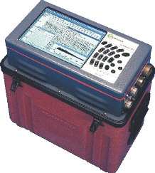
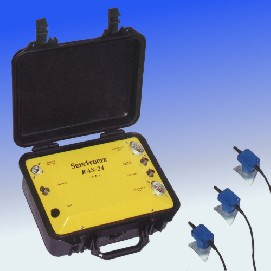
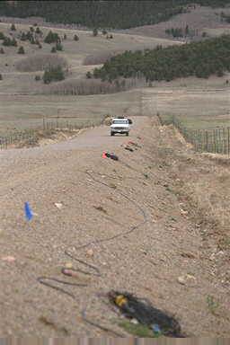

Seismic Recording Systems
Multi-channel seismic recording systems are widely available from a number of different manufacturers. Seismic recording systems come in two varies; traditional and distributed.
- Traditional seismic recording systems utilize a central system to collect and process all of the information collected from a series of geophones. This limits the number of geophones you can record information from in two ways,
- because each geophone is connected to the central recording system by a separate pair of wires, as the number of geophones increases the weight of the cable containing these wires increases. At some point, the weight of the cable becomes too heavy to be handled efficiently. And,
- because the central recording system must process and record the information from signals arriving simultaneously from a large number of geophones, there is a limitation to how much information can be processed before the recording system becomes overloaded.
- Distributed systems rely on a series of smaller processing systems distributed with the geophones to do much of the data processing required. These processed data streams are then sent to a central processing unit, as digital data, where they are collated and stored. While distributed systems are more expensive, it is possible for them to handle the signals recorded from many more geophones.
Over the past 15 years, distributed recordings systems have become the standard in the oil and mineral exploration industries. These industries have found that distributed systems allow for a more flexible distribution of geophones on the ground, and because the central system is not required to do all of the processing, these systems allow for recording of many more geophones at any one time. The maximum number of geophones that can be recorded using traditional systems, because of the limitations described above, is about 200. Using a distributed system, however, oil exploration surveys now routinely record information from 1000's of geophones.
Examples of two systems currently available for use in near-surface surveys are shown below. By-in-large, near surface surveys use traditional recording systems. The Seistronix system shown below, however, is a distributed system designed for near-surface exploration work. If you are working in the engineering and environmental industries, you will probably begin seeing more systems like this in the near future.
| 
|

|
In a traditional system, geophones are connected to the recording system by electrical cable. Each cable is capable of carrying the signals produced by several (10's to 100's) of geophones at once, rather than having a single cable go to each geophone separately.  An example of a set of geophones connected to seismic cable is shown to the right. This particular cable was commonly used for deep exploration, such as was done in the oil and gas industries during the 1970's through the 1980's. If you look carefully, you might notice that along the cable there are orange strips. These strips are actually plastic connectors into which the geophones connect. In this case, the orange connectors (called take-outs) are spaced every 110 feet along the cable. For near-surface exploration work, this spacing can be reduced to as little as 5 feet.
Most modern recording systems can display the ground motion recorded by each geophone almost immediately after recording it. Ground motion is stored either directly to digital recording tape or to a computer hard disk in the recording system itself. The recording systems typically used in near-surface exploration are capable of recording ground motion from between 24 and 142 geophones. As a rule of thumb, these recording systems usually cost about $1000 per recording channel. Thus, a system capable of recording ground motion from 48 geophones at once will cost somewhere in the neighborhood of $48,000.
Seismology
- Simple Earth Model: Low-Velocity Layer Over a Halfspacepg 11
- Head Wavespg 12
- Records of Ground Motionpg 13
- Travel-time Curves for a Simple Earth Modelpg 14
- First Arrivalspg 15
- Determining Earth Structure from Travel Timespg 16
- Derivation of Travel Time Equationspg 17
- High-Velocity Layer Over a Halfspace: Reprisepg 18
- Picking Times of Arrivalspg 25
- Wave Propagation with Multiple Horizontal Layerspg 26
- Travel Time Curves from Multiple Horizontalpg 27
- Hidden Layerspg 28
- Head Waves from a Dipping Layer: Shooting Down Dippg 29
- Head Waves from a Dipping Layer: Shooting Up Dippg 30
- A Field Procedure for Recognizing Dipping Bedspg 31
- Estimating Dips and Depths from Travelpg 32